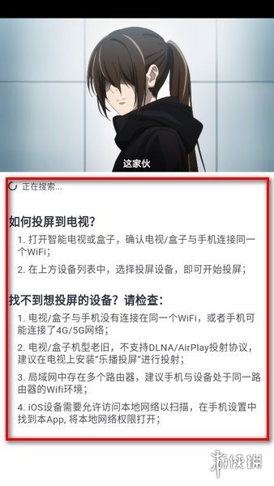

Omofun 快问快答：追番看漫一站式搞定的实用指南
整理了 8 个关于 Omofun 的高频问题——从是什么、怎么装、为什么要登录，到投屏失败、积分商城、画质调节，一次说清。
整理一篇关于 Omofun 的快问快答，把追番看漫过程中最常遇到的 8 个问题一次说清。
Omofun 是什么？谁在用？
一句话：一个专注追番和看漫的免费应用，动画和漫画都覆盖，界面清爽没广告。它的官网上有完整介绍，核心用户就是想找个靠谱地方追新番、补旧漫的人——不想在各大视频平台来回切、也不想被片头片尾广告轰炸。
它主打轻量、干净，不搞会员订阅那套，装上就能用。社区氛围也不错，弹幕和评论区质量相对可控。如果你是那种每周蹲点等更新的老二次元，或者刚入坑想找个统一入口，Omofun 值得试试。
怎么装？装完就能看吗？
安装很简单，从应用市场搜就能找到，或者从官方下载拿安装包。这里有个小提醒：装完别着急直接点开番剧，较新版本已经把登录设成了播放前置条件——游客态只能浏览列表，点播放就会报错。
所以正确的打开姿势是：先注册一个账号（手机号或邮箱都行，几分钟搞定），登录完再回来追番。登录不收费，就是产品侧要把弹幕、追番记录、缓存额度这些功能挂到账号体系上。
为什么点开番剧就报「播放错误」？
这是从旧版升上来的用户最常遇到的困惑。番剧点开转圈、画面出不来，先别急着骂网络差——先查登录态。进「我的」页看头像区域，没登录就先走注册登录流程，登完回番剧页重新点播放，大概率直接恢复。
如果登录没问题还报错，再去排查线路和网络。但 90% 的情况是没登录就想直接看，这个机制从 v1.5.7.2 版本后就开始生效了，旧版游客可直接播放的时代已经过去。
动画和漫画的画质能调吗？
能，而且调的地方还不一样。动画的画质切换在播放页菜单里，跟你用的播放器内核也有关系；漫画的档位更细，有四档可选：
- 流畅：单话约 1~3MB，蜂窝数据赶进度用
- 高清：约 5~12MB，日常阅读主力档
- 超清：约 15~35MB，大屏看细格、存收藏用
- 自动：随网络自动选，懒人档
漫画还有个实用功能——AI 裁黑边。扫描版页漫四周常有黑边，小屏幕上挤占画面。这个功能自动识别并去除黑边，正文占屏比例明显变大，对老扫描源作品特别有用。原生数字版漫画用不用无所谓，扫描党建议开着。更详细的参数说明可以看omofun文档，不同版本的选项可能有差异。
另外漫画阅读菜单里还有「预加载章节数」的选项，设 1~2 话连读不会断流，设 0 省流量但每话开头要等一下。
想投屏到电视看，搜不到设备怎么办？
投屏失败的表现很统一：点 TV 图标，搜索列表空空如也，或者搜到了连不上。按下面四步排查：
第一步，核对网络。 手机和电视必须连同一个 Wi-Fi——这是最常见的原因。手机用蜂窝数据、电视用 Wi-Fi 的组合必然搜不到。另外部分路由器的访客网络或 AP 隔离功能会拦截设备间发现，关掉隔离或换主网络再试。
第二步，确认播放内核。 Omofun 内置了 ExoPlayer 和 iJKPlayer 两种播放器，不同内核对投屏协议的支持有差异。在应用设置里切换播放内核后再试。老电视或非智能电视缺协议支持的，得加一个电视盒子。
第三步，给足时间。 设备发现需要几秒，点 TV 后等列表刷新完再下结论。退出播放页重进一次，重新触发搜索。
第四步，重启链路。 手机 Wi-Fi 开关重开，路由器和电视都重启，清掉局域网的陈旧状态。
四步走完仍不行，多半是电视端协议与应用版本不兼容，去「我的 → 意见反馈」描述机型和电视型号，等版本跟进。

积分商城是什么？有必要攒吗？
Omofun 在追番看漫之外有一层轻量的激励体系——积分与商城。积分来源有三个：日常签到（连续签到有加成）、完成观看时长/发弹幕/评论等行为任务、节日运营活动期间的限时任务。
积分可以在商城兑换周边、会员体验类物品，或者换取一些体验权益。但说实话，积分的兑换价值有限，挂机刷任务不值得——正常追番看漫顺手完成的量就够用了。
还有个容易混淆的点：播放页可能出现「看视频领 VIP 会员」之类的活动横幅，这类活动不是解锁正片的必需项，正片本身免费观看，活动提供的是额外的会员类体验权益，参与前看清活动规则即可。
和同类追番应用比怎么样？
市面上追番类应用不少，Omofun 的定位是轻量、干净、免费。它不搞会员订阅，也没有片头片尾广告，界面逻辑简单直接。缺点可能是内容覆盖不如大厂平台全，但主流番剧和热门漫画基本都能找到。
对比下来，如果你想要的是「一个应用搞定追番看漫，不被打扰」，Omofun 够用；如果追求最全版权和独家内容，可能得搭配其他平台。两者不是替代关系，是互补关系。
有什么容易踩的坑？值不值得长期用？
说几个过来人总结的坑：
- 版本差异大：积分体系、画质档位、播放内核这些功能随版本变化频繁，规则变动以应用内实际提示为准。
- 预加载注意流量：动画和漫画都有预加载，蜂窝数据下记得检查设置，别悄悄耗了流量。
- 投屏靠网络环境：不是所有电视都能顺利投屏，老电视可能无解。
最后一句：如果你每周都追新番、偶尔补老漫，Omofun 值得装上长期用——干净、免费、够用。对内容覆盖有更高要求的，当备用工具也不亏。
这套资料在 GitHub、Gitee 和 GitCode 三个仓库都同步维护着，国内访问哪个方便就用哪个，内容保持一致。